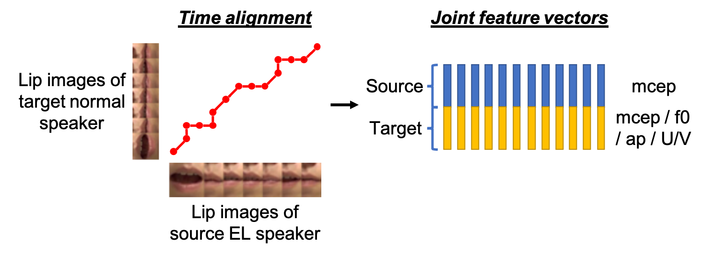
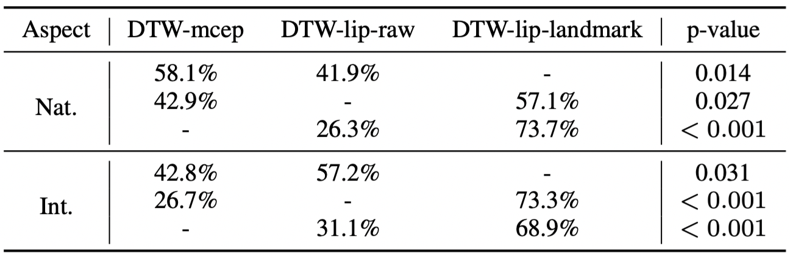

Abstract: Voice conversion (VC) is an effective approach to electrolaryngeal (EL) speech enhancement, a task that aims to improve the quality of the artificial voice from an electrolarynx device. In frame-based VC methods, time alignment needs to be performed prior to model training, and the dynamic time warping (DTW) algorithm is widely adopted to compute the best time alignment between each utterance pair. The validity is based on assumption that the same phonemes of the speakers have similar features and can be mapped by measuring a pre-defined distance between speech frames of the source and the target. However, the special characteristics of the EL speech can break the assumption, resulting in a sub-optimal DTW alignment. In this work, we propose to use lip images for time alignment, as we assume that the lip movements of laryngectomee remain normal compared to healthy people. We investigate two naive lip representations and distance metrics, and experimental results demonstrate that the proposed method can significantly outperform the audio-only alignment in terms of objective and subjective evaluations.
Proposed method

Dataset
Audio and video signals of a doctor was recorded.
Sample EL video
Sample NL video
Alignment methods
DTW-mcep: Alignment using MCD between mceps of the EL and NL speech.
DTW-lip-raw: Alignment using MSE between raw lip images of the EL and NL speakers.
DTW-lip-landmark: Alignment using Euclidean distance between lip landmarks of the EL and NL speakers.
Subjective results

Speech Samples
Transcription: 醫院大門口有很多花店 (yi yuan da men kou you hen duo hua dian)
EL speech
DTW-mcep
DTW-lip-raw
DTW-lip-landmark
NL speech
Transcription: 他的手錶慢了十五分鐘 (ta de shou biao man le shi wu fen zhong)
EL speech
DTW-mcep
DTW-lip-raw
DTW-lip-landmark
NL speech
Transcription: 周末我幫媽媽打掃房子 (zhou mo wo bang ma ma da sao fang zi)